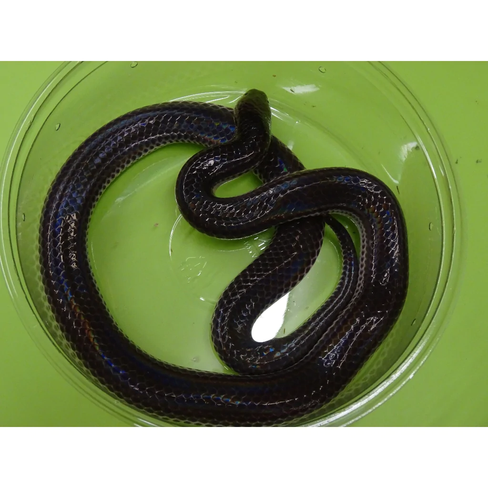
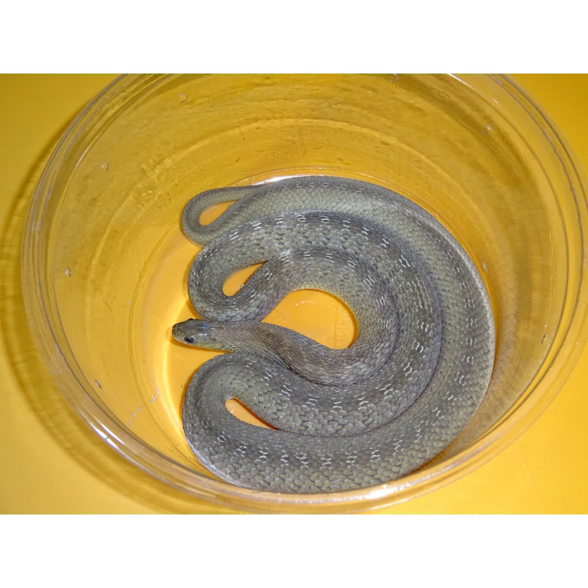

Here at Job's Adoption Center we specialize in dogs, but we also shelter
other animals also. Check these guys out and if any peak your interests
please contact us.
Snakes
 Sunbeam
Snake | Age: 3 months old.
 Black
African House Snake | Age: 5 months old.